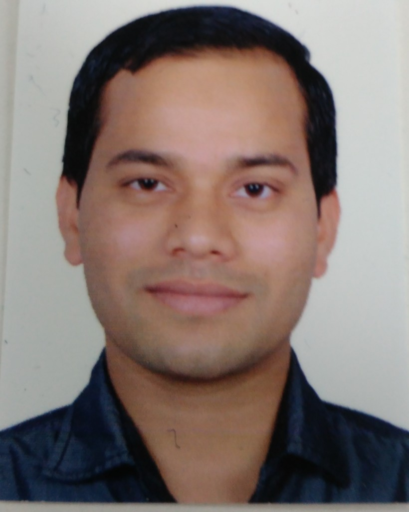

Domain
Salesforce QA, CRM application testing, Amdocs Billing validation, and E2E certification across BSS and OSS.
Salman Codes · Pune
Software Test Lead · Telecom BSS/OSS · Salesforce QA · GenAI
Test lead with a decade at Amdocs, delivering Salesforce, CRM, and billing certification across telecom BSS and OSS. More than 30 projects shipped on schedule, including programs that spanned over 300 interconnected applications.

I lead functional validation for Salesforce Sales and Services and for end-to-end telecom business scenarios. The work covers test leadership, defect tracking, automation, and data-driven reporting, with Agile delivery and GenAI-assisted test design in the mix.
Salesforce QA, CRM application testing, Amdocs Billing validation, and E2E certification across BSS and OSS.
iTrack, Jira, Zephyr, and HP ALM, plus advanced Excel for analysis and reporting.
Selenium, Ginger (Amdocs), and Postman. AI-assisted coding in Cursor for test support.
GenAI-assisted test design and execution, foundational generative AI concepts, and basic AWS.
Three lead engagements drawn from the resume. Open a brief for the scope and the tools used.
Salesforce Sales and Services testing. Shipped 30+ projects and coordinated certification across large application landscapes. Team practices include Agile delivery with iTrack, Zephyr, and Ginger.
Designed, reviewed, and executed system device test cases.
Designed, reviewed, and executed system test cases in a mainframe environment.
Available for test leadership across Salesforce, BSS/OSS, and billing programs.
I combine test leadership with hands-on validation: orders, charges, usage, and bills, then back the result with clear defect tracking and reporting.